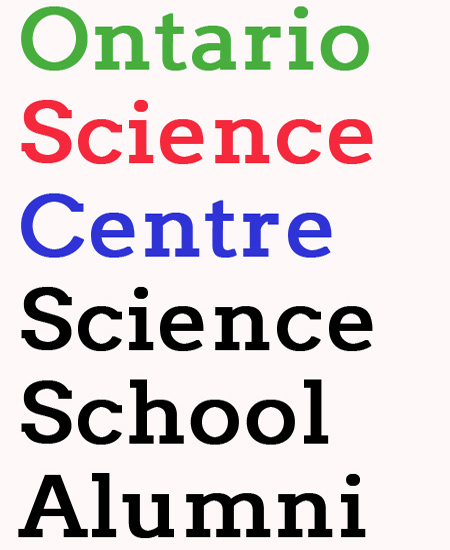
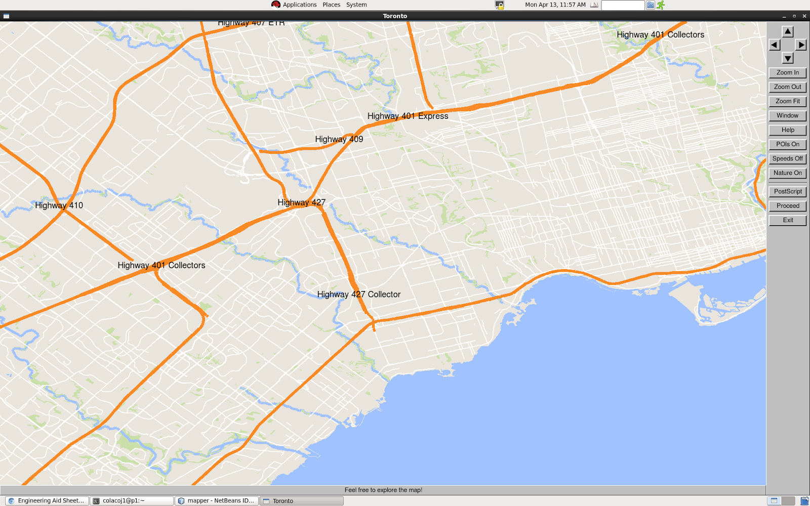
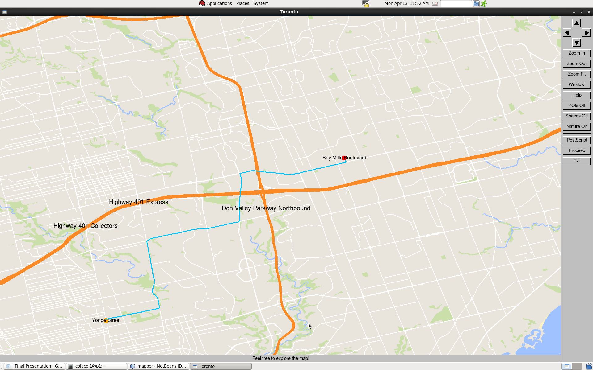
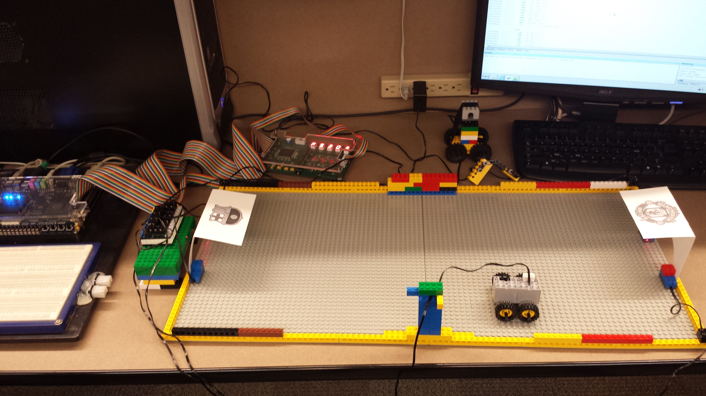
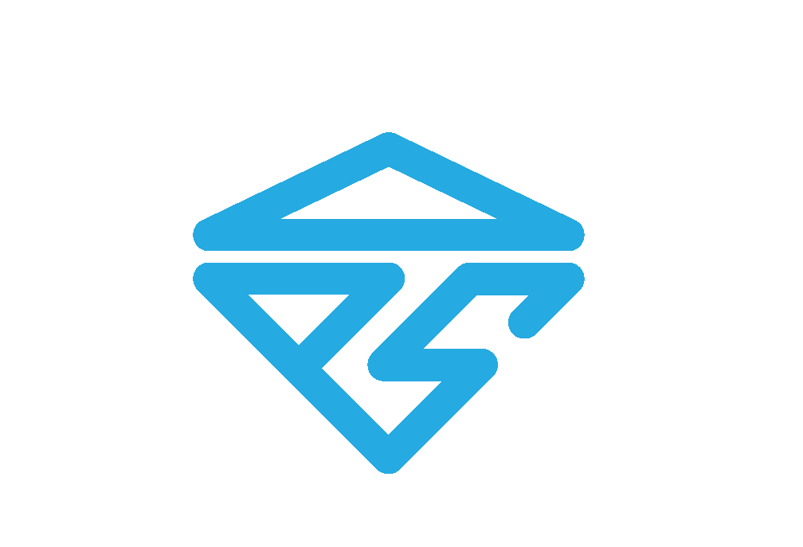

Software
Ontario Science Centre Science School Almuni website

I am an alumni of the Ontario Science Centre Science School where you can do a semester of Gr12 at the Ontario Science Centre. It’s an experience I feel very lucky to have had. Last year, another alumni and I started the process of planning a reunion. This website was created to be an information hub for that and other events. Currently, it is still in development. I coded it using HTML, CSS and JavaScript along with Bootstrap. Having being recently updated it is more interactive and mobile friendly. The website was designed to reflect the atmosphere and energy of the program. You can visit the website here
Mapping Application, Communication and Design , U of T
 
My team members and I implemented a mapping application in C++ using EasyGL graphics library to display city information using data from OpenStreetMap
Key map features include
- Display of natural features and points of interest in chosen city
- Road and Highway name display
- Zoom feature with different levels of detail
- Buttons to toggle features on/off in display
- Finds quickest path between two points of interest
- Best path between several points (Travelling Salesman Problem particular solution)
Hardware
Dance Dance Revolution, Digital Systems, U of T

Click Me!
An implementation of the popular game Dance Dance Revolution was built entirely in hardware. The ‘dance mat’ consisted of piezoelectric(pressure) sensors that converted foot pressure to voltage and an Arduino board helped to read in dance moves and passed them on to the main controller (Altera DE2 board). The project spanned three weeks and was a challenging but very rewarding experience with tons of laughs at the end, and yes, ‘Shake it off’ was the top song choice!
Football - Champions League, Computer Organisation, U of T

Implemented a 2-player football game in hardware using an Alters DE2 board and light sensors. Completely coded in Assembly Language and C using several differnt types of interrupts including keyboard and sensors.
Key game features include:
- Live goal updates on VGA display
- Automatic game timekeeping
- Game highlights displayed on Terminal
- Motorized kick functionality
Box of Fun
PartySmart Association, U of T (Web Content Design)

PartySmart Association actively encourages university students to party safely by collaborating with sponsors to provide food during events and free rides home. Other events hosted and participated include ‘Rethink the Drink’ conference, Toronto Frosh Festival 2013, Valentine’s Day events and parties within/outside the university community.
Greenhouse Restoration Design Project, Engineering Strategies and Practices, U of T

For this design project, our client wanted to restore an old greenhouse in order to grow food for a student kitchen that promoted healthy meals made out of local produce. My team had the task of coming up with the restoration plans and designs over a period of four months. We went through a series of analysis from environmental to economical, conducted several client meetings to understand their needs which finally resulted in a Design Specification Document.